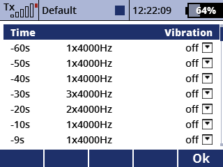
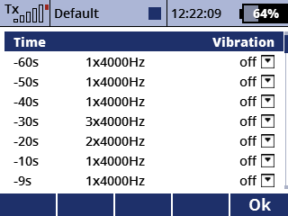
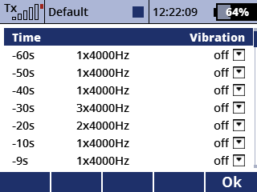

Komfortabler Editor für die Signalisierungsmuster 'Beep 1', 'Beep 2' und 'Sprache' für Timer und Stoppuhren.
Außerdem können die Knüppelvibrationen geändert werden.

Beeps und Sounddateien können hinzugefügt, gelöscht und getauscht werden. Beeps haben eine einstellbare Frequenz, Dauer und Anzahl von Wiederholungen.
Typ 1: Beep, Typ 2: Sounddatei
Wähle eine der drei Dateien, welche die Signalisierungsmuster speichern.
Bearbeite das Signalisierungsmuster.
Drücke F(5), um das Vibrationsmuster zu bearbeiten.
Verlasse die Seite, um Änderungen abzuspeichern.
Der Sender muss einmal neu gestartet werden, um die Änderungen anzuwenden.